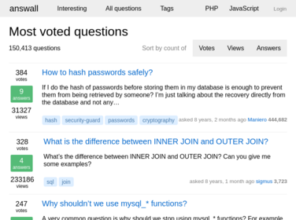
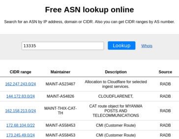

Self-taught full stack developer with 4+ years' experience in web development, web scrapers, system administration. Besides programming, I am also interested in Unix-like systems, game development, Internet of Things and cybersecurity.


I have practical experience in the following technologies: